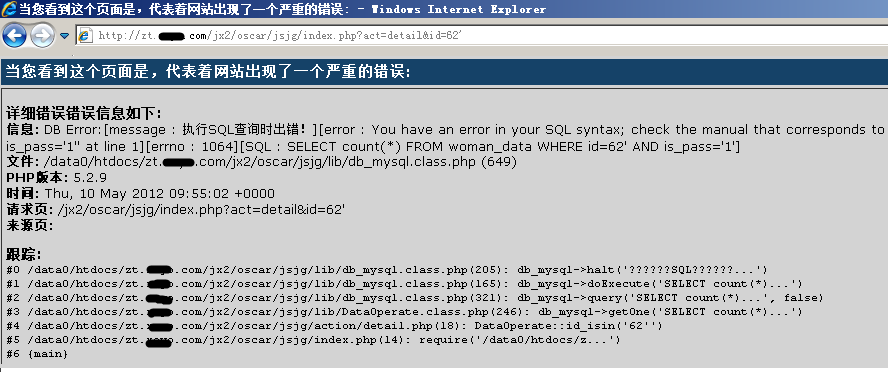
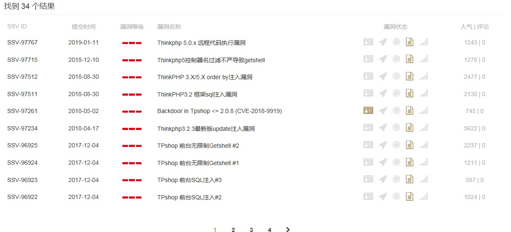

PHP安全
Posted
PHP 是流行的 Web 开发语言，也是部署广泛的网站运行时环境。
PHP 配置的安全选项
在配置 PHP 运行时环境时，需要重点关注的安全选项包括：
禁止将 PHP 报错信息输出给用户。如果 PHP 报错信息直接输出给用户，则可能会泄露服务器或者数据库配置信息。如图 8-5 所示：

禁止将 PHP 报错信息输出给用户的配置方法是在 php.ini 中增加以下内容：
expose_php = Off #在 HTTP 头部中隐藏 PHP 信息
error_reporting = E_ALL #报告所有错误和警告
display_errors = Off #禁止把错误信息显示在客户端输出中
display_startup_errors = Off #禁止把启动错误显示在客户端输出中
log_errors = On #记录错误
error_log = /valid_path/PHP-logs/php_error.log #指定错误文件的路径
ignore_repeated_errors = Off #禁止忽略重复的错误
PHP 的通用安全配置。在 php.ini 中增加以下内容：
open_basedir = /path/DocumentRoot/PHP-scripts/ #只允许 PHP 访问该路径下的文件
allow_url_fopen = Off #禁止 PHP 打开远程文件
allow_url_include = Off #禁止 PHP 包含远程文件
variables_order = "GPSE" #设置变量的解析顺序
allow_webdav_methods = Off #禁用 webdav 方法
PHP 上传文件的安全处理。在 php.ini 中增加以下内容：
file_uploads = On #是否启用文件上传，如不需要，则配置为 Off
upload_tmp_dir = /path/PHP-uploads/ #指定上传文件的临时目录
upload_max_filesize = 2M #指定允许上传的最大文件大小
PHP 执行文件的安全处理。在 php.ini 中增加以下内容：
enable_dl = Off #禁止动态加载模块
disable_functions = system, exec, shell_exec, passthru, phpinfo, show_source, popen, proc_open, fopen_with_path, dbmopen, dbase_open, putenv, move_uploaded_file, chdir, mkdir, rmdir, chmod, rename, filepro, filepro_rowcount, filepro_retrieve, posix_mkfifo #禁用危险函数，很多 Webshell 正是使用了这些危险函数来实现恶意功能
PHP 会话（Session）的安全处理。在 php.ini 中增加以下内容：
session.cookie_secure = On #仅在 HTTPS 安全连接情况下传输
session.cookie_httponly = 1 #在 Cookie 中设置了 "HttpOnly" 属性，那么通过程序 (JS 脚本、Applet 等) 将无法读取到 Cookie 信息，这样能有效的防止 XSS 攻击
session.gc_maxlifetime = 600 #设置会话过期时间
保持 PHP 版本更新。每次在官方发布 PHP 新版本后，其支持周期为 3 年，在此期间，官方会发布小版本修复漏洞。因此，笔者建议，系统管理员需要关注官方网站（ http://php.net ）来进行 PHP 版本升级，以避免旧版本的漏洞被黑客利用而导致网站被入侵。
PHP 开发框架的安全
对于 PHP 开发者来说，还需要特别注意使用到的 PHP 开发框架的安全。例如，在知名漏洞搜索平台 https://www.seebug.org 上以关键字“ThinkPHP”检索得出的高危漏洞就多达 34 个，如图 8-6 所示：
